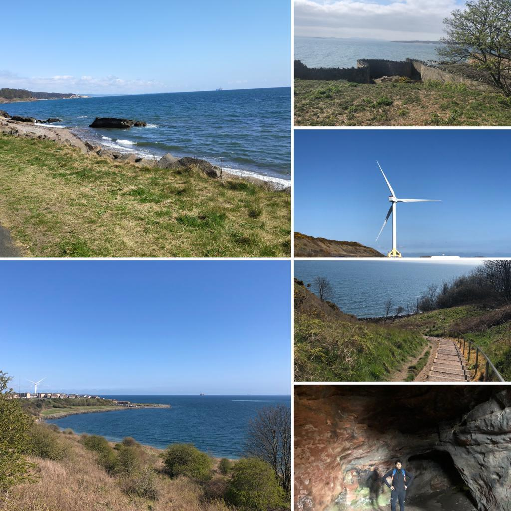
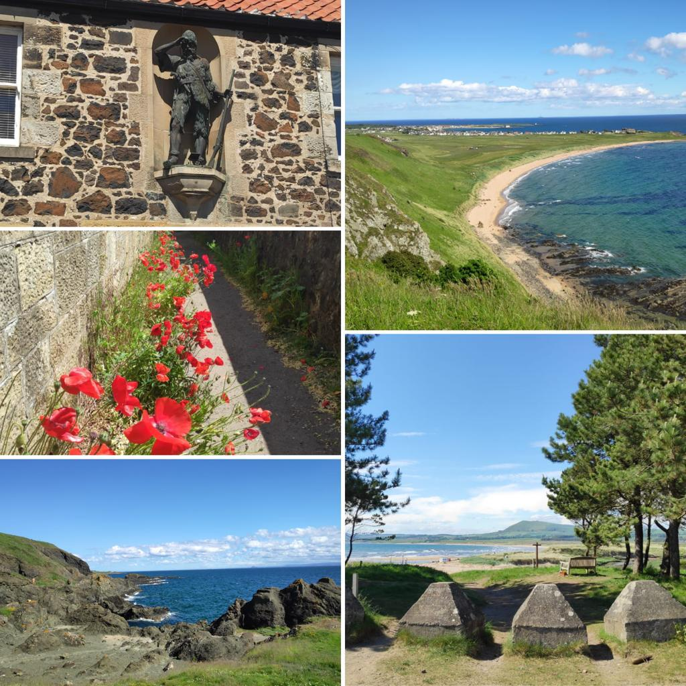

During the second Covid-19 lockdown in Scotland, imposed just before Christmas 2020, I discovered the Fife Coastal Path. The Fife Coastal Path is a 187km path that runs along the coast from Kincardine to Newburgh along the coastline of Fife. In spring 2021 when some restrictions were eased, I brought my plan to walk the trail into action. It's a nice way to get away for a weekend walk, right here in the backyard of Edinburgh. We planned to cover the entire path with one and two day trips from Edinburgh, all by public transport. The below is an epilogue of my experience. Using AllTrails and GoogleMaps as a guide, we modified the stages to suit our convenience.
Stage 1: Aberdour to Kirkcaldy
Transport: Train from Edinburgh Waverly to Aberdour. Walk the trail upto Kirkcaldy and return back by train to Edinburgh on the same day.
Difficulty: This stage is about 18km (4.5 hours) and fairly flat.
The Aberdour Silversand Beach has a lovely Park beside the beach to have a quick breakfast and start. The short Starley Burn Waterfall before Burntisland makes for a good photo opportunity. The playground at Burntisland makes for a good rest stop. Be sure to check the tide timings as the trail at Burntisland passed via the sand and mud flats. Sadly, venturing far out into the flats doesn't make for a good walking experience as we discovered, with the sea leaving behind pools of water with dead creatures and black slime. If the tide is high you would have to walk beside the road. The path runs between the railway track on one side and the beach on the other between Burntisland to a bit beyond Kinghorn and is dotted with several Caravan parks.

Stage 2: Kirkcaldy to Leven
Transport: Train from Edinburgh Waverly to Kirkcaldy. Walk the trail to Level. Return from Leven to Kirkcaldy by bus and back to Edinburgh by train on the same day.
Difficulty: This stage is about 19km (5 hours). Some uphill sections but stunning views make it worthwhile.
The trail starts off beside the road at Kirkcaldy promenade and goes off at Ravenscraig Castle. This section is absolutely spectacular till Buckhaven. We stopped briefly to checkout the Pictish caves at Wemyss. Several wind turbines and off-shore drill rigs dot the path. The path then turns into a slog as it passed through the cities of Buckhaven, Methil and Leven and the coastline disappeared from view.

Stage 3: Leven to Elie
Transport: Stagecoach bus service X60/X61 from Edinburgh to Leven and Elie (~2 hours by bus).
Difficulty: Fairly flat, 17 km walk along the coastline with a short uphill at Earlsferry.
This stage follows several picturesque beachs along east scotland coast. There are several cozy U-shaped coves along the way. Notably the long Leven beach that stretches from Leven to Largo and several shorter coves at Shell Bay, Earlsferry beach, Elie beach and Ruby Bay. These quiet and quaint beaches are some of the best ones east scotland has to offer. The water is crystal clear and the beaches have clean white sand. Catch the Robinson Crusoe statue at the birthplace of Alexander Selkirk and spot groups of Skylark birds and possibly seals at the grasslands of Dumbarnie Links Nature Reserve.
The trail climbs up a short uphill section over the dramatic cliffs of Earlsferry beach. Those looking for more adventures can try the Elie Chain Walk. The scramble takes you along chains built on some hazardous looking coastal terrain for half a km. There are 8 chains in total along cliffs from west of Elie village, hugging the cliffs towards Kincraig Point and Shell Bay. You can catch glimpses of the chain walk from the walking path over the cliffs where some vertical sections have upto 10 metres height gain/loss.

Stage 3: Kincardine to Limekilns
Transport: Stagecoach bus (X55) or ScotRail to and from Dunfermline. Change to Stagecoach bus (x24) to reach Kincardine and Bay bus (F6) to get back from Limekilns to Dunfermline.
Difficulty: Fully flat terrain, 18 km
Kincardine is one end of the Fife coastal path. The path starts along the currently closed Longannet power station (the last coal-fired power station in Scotland to shut down). However, the burning chimneys visible just on the opposite shore at Ineos Grangemouth are stark reminders that not much has changed and we are still highly reliant on fossil fuels. Several parts of the path run adjoining roads and very few parts have clear views of the coast. The path gets better as it passes through Culross and Torryburn. The Culross Abbey and Preston Island are quite scenic. The path in places runs along an old railway track that once supplied coal and limestone giving the trail a rustic feel. Just as we finished the trail at Limekilns we sat at an outdoor table to enjoy some food and soak in the weather at Coorie by the Coast restaurant. (In picture: a dragon sculpture in Limekilns called "Fiona’s Dragon", made of scrap metal and eyes of fused glass to give it a piercing stare. A wacky and fun thing we accidentally came across in a backyard along the path!)

I am using this blog post almost like a diary and will keep it updated as I complete each stage of the Trail over the next few months.